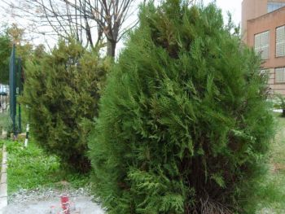
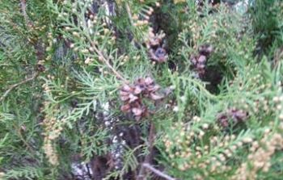

Flora ornamental del Campus
de
Reina Mercedes, Universidad de Sevilla. Ficha nº
55 - Versión
1
|
Thuja orientalis L.,
Sp. Pl. 1002 (1753) Biota orientalis, Plactycladus orientalis |
|
|
Tuya,
tuya
oriental |
Arbusto de
hojas escamiformes |
|
Arbusto de hojas escamiformes, de hasta Conos
femeninos (piñas) de 1- Florece en
primavera y fructifica en otoño. |
 |
|
 |
Observaciones: El nombre genérico de Thuja
deriva del griego thia o thyon y en ambos casos indica
árbol oloroso(1). Produce un aceite venenoso. Tolera inviernos muy
fríos y soporta veranos muy cálidos. Produce un compuesto
utilizado para quitar verrugas. |
|
Área de origen.- Su área natural de
origen es Asia templada, desde Irán hasta China y Corea. |
|
|
Uso en el campus: numerosos ejemplares, la mayoría formando setos y algunos como arbustos ornamentales |
Localización: Jardín
del Estanque (seto) |
|
(1) www bpmmanzanares.es/especiales/arboles/Tuyafinal.htmhttp. (2)
www.infojardin.com/fichas/arboles/thuja-orientalis-arbol-de-la-vida-biota.htm |
|
|
Ángela Saavedra Fuentes & Carlos Romero Zarco (2007) |
|